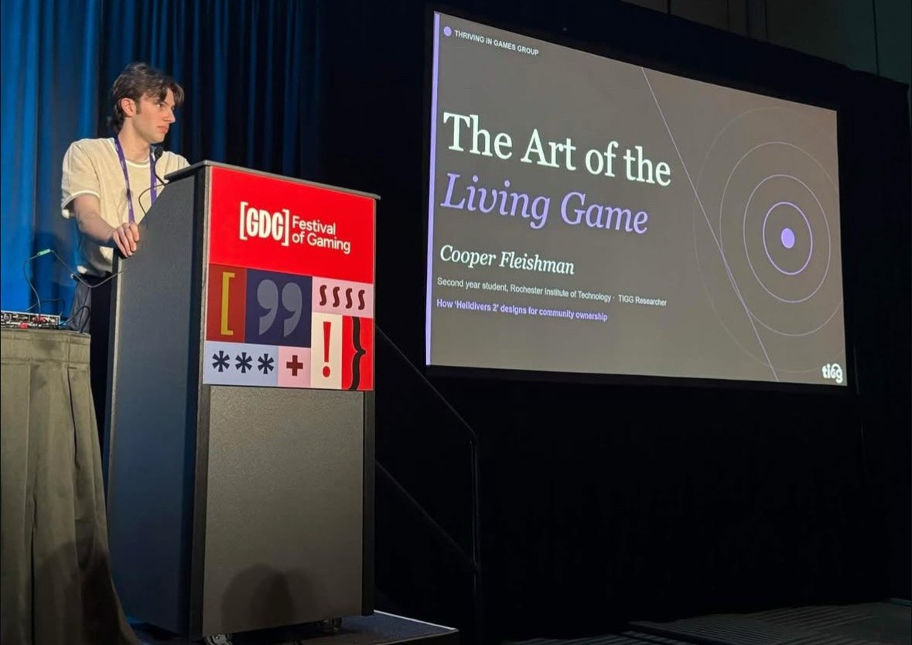
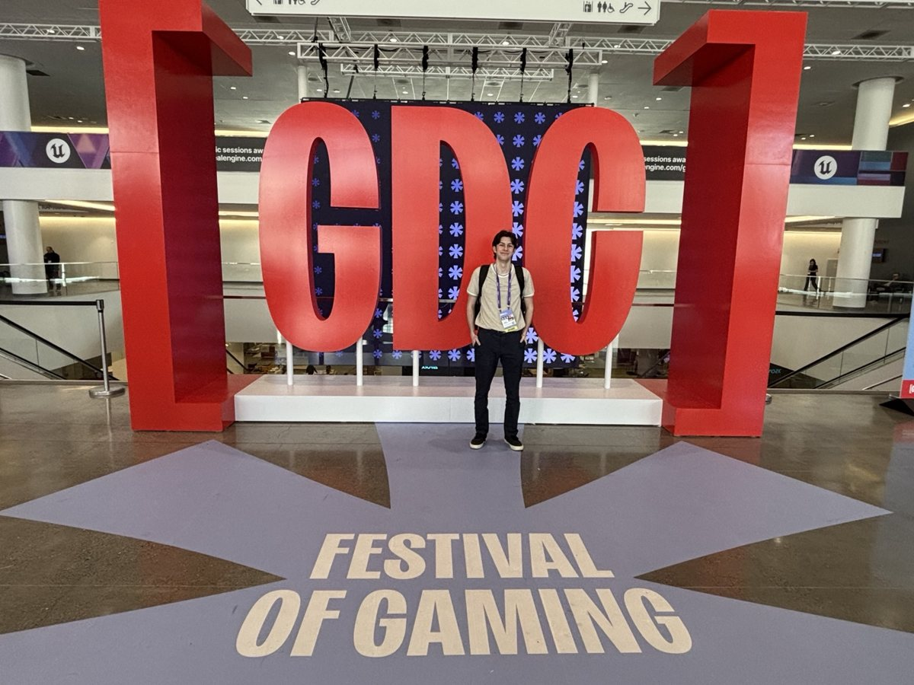
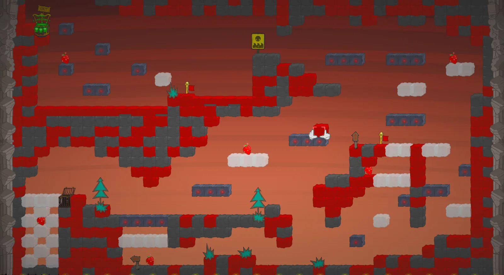
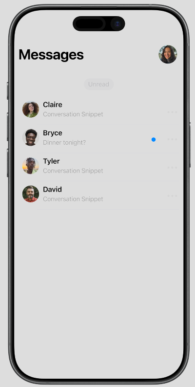
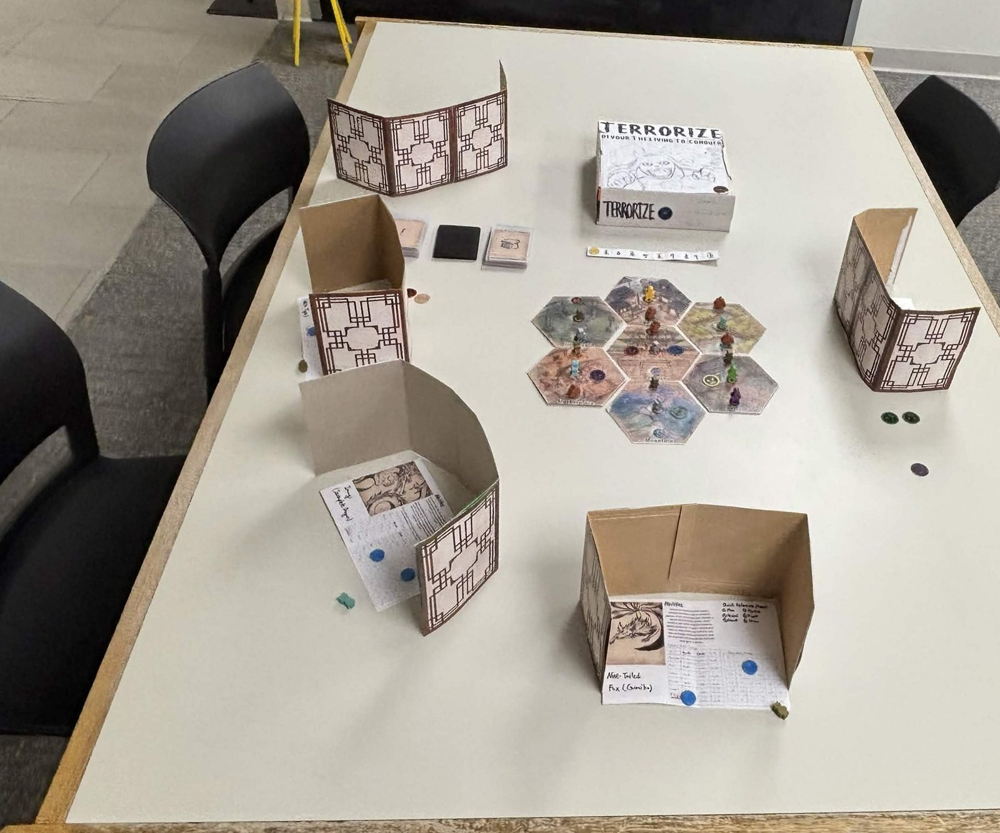

Seeking a user experience internship for Summer 2027
Research
Pro-Social Research Fellow, Thriving in Games Group
Virtual · September 2025 – Present

Presenting at the GDC Festival of Gaming

At GDC
Presented “The Art of the Living Game,” on how Helldivers 2 designs for community ownership, to game industry professionals in a 30 minute talk at the Game Developers Conference (GDC).
Conduct qualitative and ethnographic research on prosocial behavior in Helldivers 2, focusing on in-game interactions and cooperative mechanics.
Analyze community forums and digital spaces to assess community health and player sentiment.
Ran a preliminary qualitative content analysis of player complaint discourse about matchmaking in Arc Raiders and other extraction shooters, to identify recurring player pain points.
Organize a prosocial game jam focused on designing for positive player interaction.
Qualitative content analysis
Ethnographic research
Player sentiment analysis
Selected projects
BattleBlock Theater Level
Level design · Academic project · September – October 2026

The finished level in BattleBlock Theater
Designed and built a full level in BattleBlock Theater's in-game level editor, starting from a written level proposal.
Ran 3 playtest sessions, gathering feedback through observation and verbal critique.
Revised the level by closing off spaces so it fit BattleBlock's existing level language.
Filled unused corners with a hidden gem and an extra traversal path.
Level design
Playtesting
Level proposal
iMessage Conversation Tagging
UX design · Academic project · March – May 2026
A conversation tagging feature designed for Apple's iMessage design system.
Created wireframes and user flows to map the experience from start to finish.
Prototyped the feature in Figma, including an on-screen keyboard so people can type custom names for their tags.
Gathered user feedback through observations and surveys.
Wireframes
User flows
Figma prototype
Surveys

Messages list from the Figma prototype
Terrorize
Game designer · Academic project · February – May 2026

The Terrorize prototype: box, hex map and player screens
A social deduction board game for 3 to 6 players. I designed the core systems, wrote the rules and balanced the characters.
Ran 2 playtests with 6 players each to find pain points, and player understanding of the rules improved greatly between sessions.
Revised core systems, including how information is hidden between players, based on what the playtests showed.
Rewrote rulebook copy to resolve the pain points players hit.
Board game design
Systems design
Playtesting
Rulebook writing
More work
Watch Your Point
Personal project · Jun 2025 – Jan 2026
A multiplayer co-op rhythm game prototype in Unity, inspired by competitive rowing. I researched real rowing mechanics and translated them into timing, rhythm and cooperative play.
Unity
C#
Game design
Rowing Telemetry System
Personal project · Started Jan 2026
An affordable, open source telemetry system built with other rowers. I prototype the microcontroller housing so it installs with little technical expertise, and the system can be adopted a step at a time.
Open source
Prototyping
Hardware housing
Don't Lose Your Head!
Game jam · Lead programmer · Oct 2025
A 2D puzzle platformer made in Unity with 4 other developers on a tight deadline. I built level elements and hazards with C# events and wrote an input manager for Unity's new Input System.
Unity
C#
UI Toolkit
Pokemonle
Academic project · Nov 2025
A Wordle-style Pokémon guessing game in HTML, CSS and vanilla JavaScript, with hot and cold indicators and live data pulled in through the Fetch API.
JavaScript
HTML
CSS
Fetch API
Skills
Research
Qualitative content analysis, ethnographic research, player sentiment analysis, surveys
Design
Wireframing, user flows, prototyping, playtesting
Languages
C#, JavaScript, HTML, CSS, Java, C++
Tools
Figma, GitHub, Unity, Visual Studio Code, Trello, Maya, Substance3D
Background
Rochester Institute of Technology
B.S. Game Design and Development · Expected May 2028
College of Computing and Information Sciences. Presidential Scholarship recipient.
RIT Rowing
Varsity · Rochester, NY
Recruit Chair (August 2026 – Present): contact prospective recruits, answer their questions about the team and RIT, and host them on campus and at practice.
Social Media Chair (August 2025 – May 2026): managed the team's social media and won a promotional grant from USRowing to produce a video showcasing the team's culture and training.
Contact
Available Summer 2027
I am looking for a user experience internship where qualitative research and game design meet. Write to me or find me on LinkedIn.